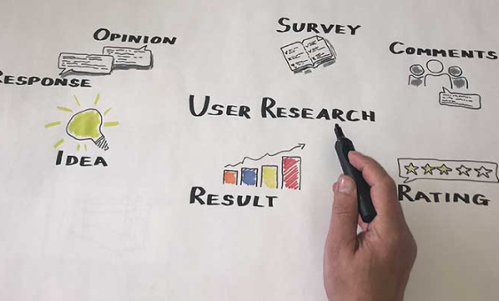
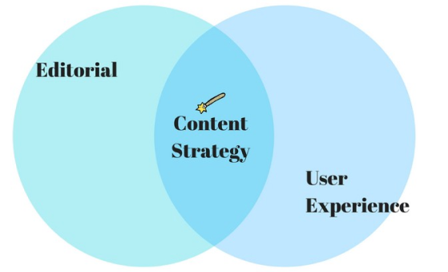
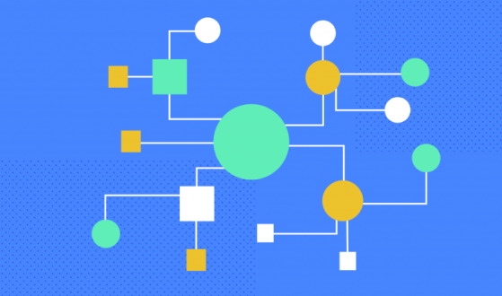
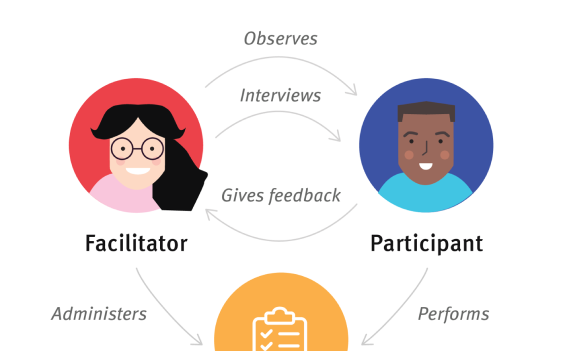

I love going into basics and form a plan. Whether it is a redesign or creating a persona... I feel confident with my researching skills. I love getting people’s opinions and getting their insights on how to make a website or app more trafficable and interactive and it always starts with research.
Everything is about content especially trying to hook a user to a website/app. The content starts the story and I love to plan and rearrange contents till i feel satisfied that it will catch a person’s eye and gravitate towards the website. Also it is quite fun to do.
This job is cool because it is the skeleton of the website and finding which layout works best before giving it to the fron end team to code. Nice way to help them out and exchange ideas.
I love this process because interactions with willing participants helps us see the bigger picture of our prototypes for the website/app. Also I love making it fun and interactive during this process to make users feel comfortable and have no pressure. Also usability testing is a great way to see how people react to a new app/website or a redesign
